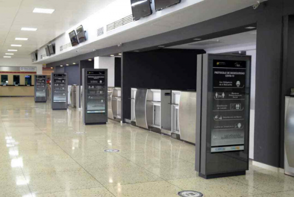
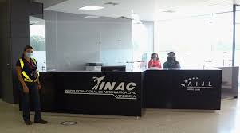

Es un aeropuerto venezolano ubicado en la ciudad de Barquisimeto, Estado Lara. Es el séptimo en importancia del país. Sirve como puerta de entrada a la Región Centro Occidental, conformada por los estados Lara, Portuguesa y Yaracuy.
Hoy en día transitan gran cantidad de pasajeros con destino a la ciudad de Caracas. Posee una gran ventaja geográfica para la ejecución de viajes a Miami y Aruba, por ser uno de los aeropuertos más próximos a estos lugares, incluso más que el principal terminal aéreo de Venezuela, el Aeropuerto Internacional Simón Bolívar, ubicado en Maiquetía.
El Aeropuerto Internacional Jacinto Lara mantiene operaciones comerciales con Conviasa desde y hacia Porlamar, Laser Airlines y Estelar desde y hacia Caracas y Aruba Airlines desde y hacia Aruba y a partir de Marzo una nueva ruta directa entre Ciudad de Panamá Y Barquisimeto a través de la Línea Aérea Venezolana siendo el segundo destino internacional de Barquisimeto y de Lara.
Es una sociedad abierta y flexible, de hecho y derecho.El Aeropuerto Internacional Jacinto Lara (IATA: BRM, OACI: SVBM). Dedicada al ramo de servicio que ofrece servicio vuelo Lara mantiene operaciones comerciales con Conviasa desde y hacia Porlamar, Laser Airlines y Estelar desde y hacia Caracas y Aruba Airlines desde y hacia Aruba y a partir de Marzo una nueva ruta directa entre Ciudad de Panamá Y Barquisimeto a través de la Línea Aérea
